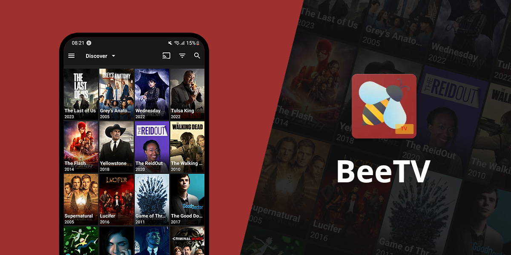
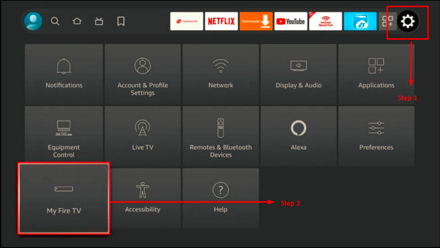
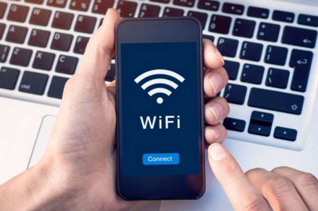

BeeTV: A Complete Guide to Use the App
Are you looking for a site to watch your movies of interest safely and seamlessly? BeeTV movies App might be what you are searching for, or might not be. With this blog, we will give you a detailed look into the Bee TV App, how to use it, and whether it is the best gem to be found.

What is BeeTV?
BeeTV is a widely used free, ad-supported streaming app that enables users to stream movies and TV shows on multiple devices. The app features a vast library of movies and TV shows, including the latest releases and timeless classics, making it a popular choice for streaming enthusiasts.
Bee TV functions by gathering content from multiple sources on the internet and providing users with links. It doesn't store any content internally but serves as a search engine for accessing high-quality movies and TV shows. Furthermore, the app offers a user-friendly interface and easy navigation, ensuring an enjoyable experience for users.
However BeeTV is not an official app, and may provide access to copyrighted content without permission. Therefore, the use of Bee TV may not be legal in certain regions, and precautions should be taken when using the app.
What are the features of BeeTV?
-
Quality: It provides high-quality video streaming. You have the option to select any quality that you want to stream from SD to Full HD.
-
Crawl-based: Bee TV works as a crawling app by providing links hosted elsewhere with good video quality.
-
Huge library: It has a vast library of content that includes movies and TV shows of various genres and languages.
-
User Interface: BeeTV has a brilliant user interface that makes it easy to navigate and search for content.
-
Offline download option: It provides a great offline feature that will ease your streaming experience with no Internet connection.
-
No login required: It does not require you to log in to enjoy watching movies and series for free.
Is BeeTV legal?
Yes, Bee TV is completely legal to install and use the app. It doesn’t actually host any content itself but instead serves as a search engine, providing users with a list of server links for various movies and TV shows.
However, most of the links obtained from databases and websites may not have the necessary licensing for content distribution. Meaning that streaming such content could be deemed illegal and may result in legal consequences.
To avoid these risks, you need to use BeeTV with a VPN (Virtual Private Network).
How to download Bee TV for all devices
How to install BeeTV on Android TV Box
To get Bee TV on an Android box, you can follow the steps below:
-
Step 1: Launch your Android TV Box and go to the search option on the main menu.
-
Step 2: Type "Downloader" into the search bar, and select the first suggestion that appears.
-
Step 3: Install the Downloader app by clicking "Get" and wait for the installation process to complete.
-
Step 4: Open the Downloader app and add the following link beetvapk.org/dl-3/.
-
Step 5: The download for the Bee TV APK file will start automatically. Wait for the download to complete.
-
Step 6: After the download is complete, select "Install" to begin the installation process.
-
Step 7: Wait for the installation process to complete. Once done, select "Open" to launch Bee TV and start streaming your favorite movies and TV shows.
It is also worth noting that some users may prefer to remove ads from Bee TV to enhance their streaming experience.
How to download BeeTV on Firestick
Firestick, also known as Amazon Fire TV Stick, is a streaming media player developed by Amazon. It is a small device that connects to the HDMI port of your television, allowing you to access a wide range of online streaming services and apps on your TV.
Firestick runs on the Fire OS, which is based on the Android operating system. To get BeeTV download on your Firestick, you can follow the steps below:
-
Step 1: From the home screen of your Firestick, navigate to "Settings" in the menu bar at the top of the screen.
-
Step 2: In the Settings menu, select "My Fire TV" or "Device."

-
Step 3: Select "Developer Options."
-
Step 4: Click “Install unknown apps” and turn on "Apps from Unknown Sources". This will allow you to install third-party apps on your Firestick.
-
Step 5: Go back to the home screen and select the search icon in the menu bar at the top of the screen.
-
Step 6: Search for "Downloader" using the on-screen keyboard.
-
Step 7: Select "Downloader" from the search results and install the app.
-
Step 8: Open the "Downloader" app and enter the following URL beetvapk.me/download/.
-
Step 9: Wait for the download to complete and then select "Install". Once the installation is complete, you can launch the Bee TV Firestick and start streaming your favorite movies and TV shows.
How to install BeeTV on Roku
Roku is a brand of digital media players that allow users to stream a wide range of content directly to their televisions. It offers a variety of streaming devices and smart TVs that provide access to numerous streaming services, apps, and channels.
The Bee TV app is not available for streaming on the Roku channel store. However, you can still stream BeeTV by utilizing screen mirroring on your device. Screen mirroring allows you to mirror Bee TV from compatible devices such as Android smartphones, PCs, and more.
How to watch movies on BeeTV
After downloading, you can watch Bee TV movies by following these general steps:
-
Step 1: Open the BeeTV app on your device.
-
Step 2: Search for the movie you want to watch using the search function, or browse through the available titles.
-
Step 3: Select the movie you want to watch.
-
Step 4: Choose the quality of the video you want to stream, from SD to Full HD.
-
Step 5: Select a streaming link for the movie. BeeTV works as a crawling app, providing links hosted elsewhere with good video quality.
-
Step 6: Once you've selected a streaming link, the movie should start playing.
It's important to note that Bee TV provides links to content hosted elsewhere, so the availability and quality of the content can vary.
Additionally, BeeTV downloading content may not be legal in all jurisdictions. It's recommended to use BeeTV with caution and in compliance with applicable laws and regulations.
How to remove Ads within BeeTV
There are a couple of ways to remove ads within Bee TV.
Solution 1 - Use MX Player:
-
Step 1: You will need to install MX Player Pro.
-
Step 2: Then open BeeTV and click the Hamburger (Menu on the top left corner of the app).
-
Step 3: From there, select "Settings" and then "Default Player". Choose MX Player from the list and the ads should no longer appear.
Solution 2 - Use the CleanWeb feature within the Surfshark VPN app:
-
Step 1: Use Surfshark to get rid of ads at the bottom of the screen.
-
Step 2: Launch Surfshark App and select Features.
-
Step 3: Enable the CleanWeb feature.
-
Step 4: Return to the BeeTV Application and see the magic.
It is worth noting, however, that some users have reported still seeing ads even after following these methods. This may be due to changes in the app's functionality or updates to the ad-blocking methods, so it is not a guaranteed solution.
Why is BeeTV not working?
There could be several reasons why Bee TV is not working. Here are a few common issues and potential solutions:
Reason 1 - Server Issues:
-
Cause: BeeTV relies on external servers for content streaming. If the servers are down or experiencing issues, it can affect the app's functionality.
-
Solution: Wait for the servers to be back online or try using the app at a later time when the server issues have been resolved.
Reason 2 - App Update:
-
Cause: Outdated versions of Bee TV may encounter compatibility issues or bugs.
-
Solution: Check for updates in the app store or official BeeTV website and install any available updates to ensure you have the latest version.

Reason 3 - Internet Connection:
-
Cause: Weak or unstable internet connection can cause Bee TV to not work properly.
-
Solution: Check your internet connection, restart your router, or try connecting to a different network to ensure a stable and reliable connection.
Reason 4 - Clear Cache and Data:
-
Cause: Accumulated cache and data can sometimes cause performance issues with BeeTV.
-
Solution: Clear the cache and data of the Bee TV app in your device's settings to refresh its performance.
Reason 5 - Device Compatibility:
-
Cause: Older or low-spec devices may struggle to run BeeTV smoothly.
-
Solution: Verify that your device meets the minimum requirements to run Bee TV. Check the app's official documentation or support resources for device compatibility information.
Reason 6 - Reinstall the App:
-
Cause: Installation or configuration issues with BeeTV may be causing the app to malfunction.
-
Solution: Uninstall Bee TV from your device and reinstall it from a trusted source to resolve any installation or configuration issues.
If none of the above solutions work, it's possible that BeeTV may be experiencing technical difficulties or may have been discontinued. In such cases, you may need to consider alternative streaming apps or contact Bee TV's support team for further assistance.
Why is my BeeTV not working on Firestick?
If Bee TV is not working on your Firestick, there are a few possible reasons and solutions to consider:
-
Internet Connection: Ensure a stable internet connection by checking your Wi-Fi settings or trying a different network. Restarting your router may also help.
-
App Update: Check for updates in the Amazon Appstore or official BeeTV website. Install the latest version to address compatibility issues or bugs.
-
Clear Cache and Data: Go to Settings ⇒ Applications ⇒ Manage Installed Applications ⇒ Bee TV. Clear the cache and data to refresh the app's performance.
-
Device Storage: Check available storage on your Firestick and remove unnecessary files or apps that might be causing storage limitations.
-
Restart Firestick: Perform a restart by going to Settings ⇒ My Fire TV ⇒ Restart. This can resolve minor issues and optimize app performance.
-
System Updates: Check for system updates in Settings ⇒ My Fire TV ⇒ About ⇒ Check for System Update. Install any available updates to ensure the Firestick has the latest firmware.
-
Reinstall BeeTV: From Settings ⇒ Applications ⇒ Manage Installed Applications ⇒ Bee TV, then reinstall it from the Amazon Appstore or a trusted source.
Remember that occasional technical issues or compatibility limitations can arise, so considering alternative streaming apps or seeking support from BeeTV may also be worth exploring.
What is the best BeeTV alternative?
Bee TV is a decent app to watch movies and TV shows. But obviously, it is not the best—not even close. Believe it or not, you now can watch movies without sitting through ads and pop-ups.
OnStream is among the best sites to provide you with such a seamless watching experience.
OnStream delivers premium features that you generally have to pay for on subscription services at no cost. The site is 100% free, with no hidden fees, advertisements, or pop-ups. Moreover, you can start streaming without making an account or signing up.
OnStream also supports multi-subtitles, which allows you to select the language that suits you best. You can also choose from a range of servers from numerous other sites and services, not just Torrent servers.
In conclusion, if you're seeking premium-level services without any hassle, OnStream is the superior alternative, considering BeeTV's many commercials and pop-ups. Why settle for less when you've already got to know OnStream.